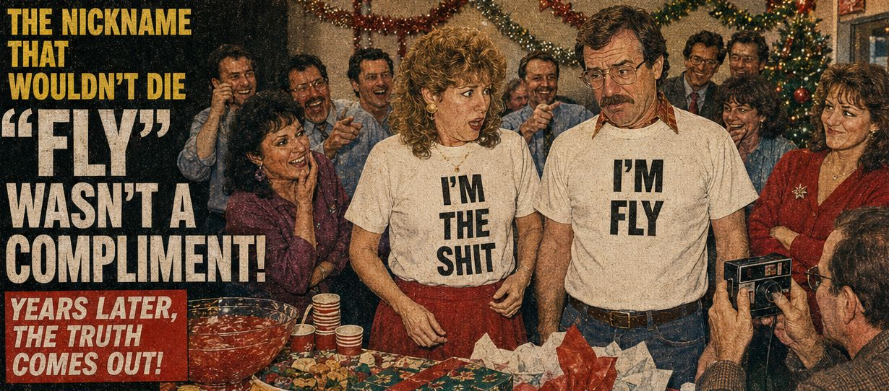

WOMAN DISCOVERS THE REAL MEANING OF HUSBAND'S NICKNAME AFTER YEARS OF CALLING HIM “FLY”


For years, Tina Halerfan had no reason to question her husband's nickname. Everyone called Karl Jurg Jr. “Fly,” a name someone else had given him early in their relationship. Tina assumed it meant what it seemed to mean: that Karl was cool, stylish, or perhaps just the kind of guy who carried himself with a certain amount of confidence. Whatever the original reason, there was nothing particularly unusual about it.
Eventually, Tina started calling him Fly herself. The nickname became part of their everyday lives. She would call for Fly, ask where Fly was, or introduce Karl using the name without giving it a second thought. As far as Tina knew, it was simply the name everyone had settled on.
What she didn't know was that the nickname had nothing to do with Karl. It had to do with her.
The person who originally gave Karl the nickname had a much less flattering explanation. Tina was, in the estimation of that particular individual, shit. Because flies are attracted to shit, her companion naturally became known as Fly. It was apparently considered hilarious.
Tina, however, had never been let in on the joke. For years she had been unknowingly participating in it, casually calling her husband “Fly” without realizing that the nickname was actually a reference to her.
Then, after years of waiting, Karl's coworker Betty Wizard decided it was finally time to reveal the truth at their annual Christmas party. Betty did not explain the joke. She bought two T-shirts.
Tina received hers first. When she opened the package, she found a shirt bearing a simple declaration:
I'M THE SHIT
Tina smiled, laughed and looked very pleased with herself. As far as she knew, she had just received a pretty good Christmas present.
Then Karl opened his. His shirt said:
I'M FLY
At first, everyone cheered and laughed. Someone suggested that Tina and Karl stand together for a photograph, and they did. It was only when they were standing side by side that the joke became clear.
The crowd realized it first. Then Tina did. Her smile disappeared. Karl took a little longer. He looked at his shirt, looked at Tina's, and then apparently understood exactly what “Fly” had meant all those years.
He stopped smiling, too. He looked scared.
For the first time, Tina understood why everyone had always called Karl Fly. She understood why someone had given him that name in the first place. Perhaps worst of all, she understood that she had spent years helping to tell the joke every time she called her own husband by the nickname.
The first shirt had fooled her completely. “I'm the shit” sounded like a compliment, and for a few moments Tina was happy to be wearing it. Then she saw Karl's shirt and she knew.
Karl was Fly because she was shit.
Now everyone at the Christmas party knew it too.
The room, which had been full of laughter only moments earlier, suddenly became a much more complicated place. Betty Wizard, who had apparently been waiting years for this moment, had finally managed to explain the nickname without ever actually having to explain it.
Tina and Karl were left standing together for the photograph, wearing matching shirts that revealed a joke Tina had unknowingly been participating in for years. The photograph was taken anyway. Somewhere behind the camera, Betty Wizard was probably having the best Christmas of her life.
For Tina and Karl, however, the evening had become considerably less festive. After all, they had finally learned what “Fly” meant. They had learned it in front of everyone.
Related posts

Speed Racer Star Hospitalized After Attack
Fuzzles Of Speed Racer Fame and Clyde, Clint Eastwood's one time companion and star of Every Which Way But Loose,…

How to Score with Nigerian Women - Without Really Trying
Courting rituals in Nigeria are so progressive. In the USA, you can barely get away with saying hi to a…

9 Year Old Boy Commits Suicide After Learning Mummies Are Real
Lodi, NJ – A 9 year old 5th grader attending Hillstop School in Lodi NJ has committed suicide after a…

Truck Driver Hit By Sleep Deprived Woman, Body Parts Everywhere
A 53 year old truck driver ran out of gas on the highway. He parked the truck on the shoulder…